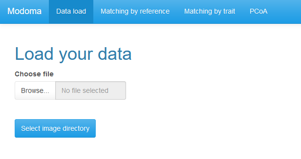
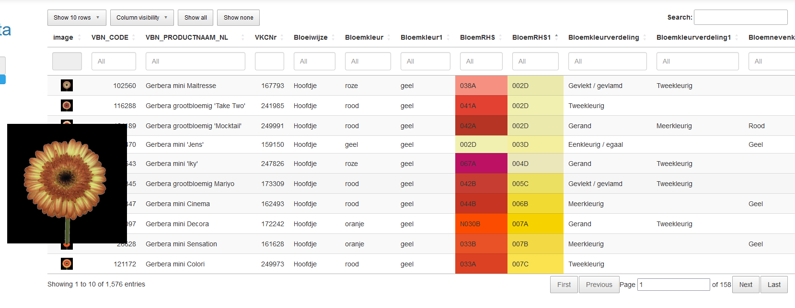
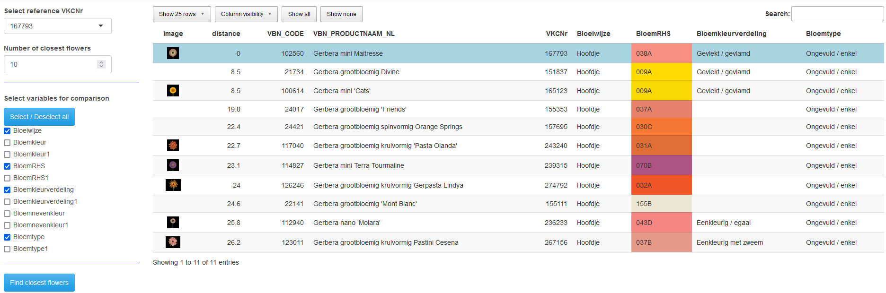
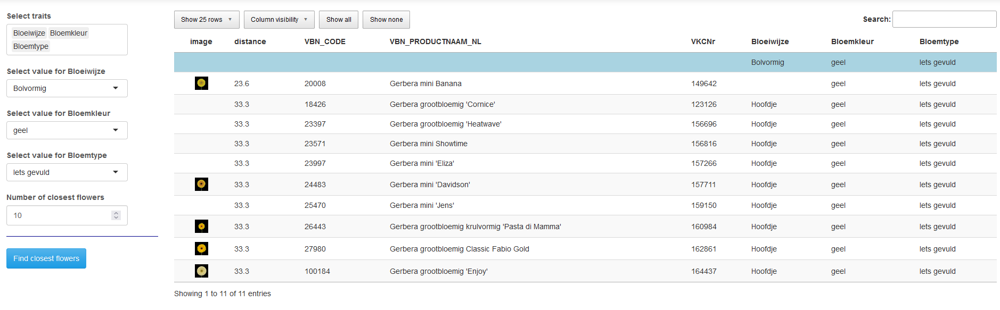

Manual.RmdIn het Modoma project (2021-2023) hebben Floricode, Naktuinbouw en Biometris/WUR de mogelijkheden onderzocht van automatische identificatie van bloemkenmerken in rozen en gerbera’s, op grond van beelden. Deze beelden worden door toepassing van AI gelinkt aan de databases waarin de kenmerken zijn opgeslagen. Om een overzicht te krijgen van de inhoud van die databases is een app ontwikkeld op basis van R/Shiny. Met deze app kun je in je browser een overzicht van de kenmerken bekijken, je kunt records vergelijken, en je kunt een set waardes definieren voor een subset van de kenmerken, en dan kijken welke records daar het meest op lijken. Deze versie werkt voor vier datasets: FloricodeGerbera, FloricodeRose, NaktuinbouwGerbera en NaktuinbouwRose. Het is mogelijk dit op een relatief eenvoudige manier ook toe te passen op andere datasets met dezelfde opbouw.
De software draait op alle gangbare besturingssystemen (Windows, MacOS, Linux). Dit document beschrijft de installatie en het gebruik van de app.
De installatie van de app kan worden gedaan in een paar eenvoudige stappen:
Installeer R op je computer. Uitgebreide instructies voor alle besturingssystemen zijn te vinden op https://cran.r-project.org/. Voor Windows komt het er op neer dat je de installatie-executable downloadt (https://cran.r-project.org/bin/windows/base/R-4.3.0-win.exe) en installeert door te dubbelklikken - binnen een beschermde omgeving kan het zijn dat IT support daarbij moet helpen voor de permissies.
Save het modoma_1.0.0.tar.gz bestand op een plek op je harde schijf, in Windows bijvoorbeeld in de nieuwe map “C:/Rsoftware”.
Start R op, en type op de command line het volgende:
install.packages("remotes")
remotes::install_local(path_to_file, dependencies = TRUE)waarbij path_to_file vervangen moet worden door de plek waar het modoma bestand is opgeslagen, in Windows bijvoorbeeld:
remotes::install_local("C:/Rsoftware/modoma_1.0.0.tar.gz", dependencies = TRUE)
library(modoma)
launch()De app bestaat uit een aantal afzonderlijke tabbladen:
In het vervolg van dit document worden de tabbladen één voor één besproken.
Op het eerste tabblad, “Data load” kunnen de data en de bijbehorende afbeeldingen worden ingelezen. De ingelezen data vormt de basis voor de analyses die op de volgende tabbladen kunnen worden uitgevoerd.

Klik op Browse… en selecteer een .csv bestand met de data.
Klik op Select image directory en selecteer de directory waarin de afbeeldingen staan opgeslagen.
Nadat zowel de data als de afbeeldingen zijn geselecteerd, wordt een tabel gegenereerd waarin de inhoud van het data bestand gekoppeld is aan de geselecteerde afbeeldingen. Dit houdt in dat verwijzingen in het data bestand naar de bestanden met afbeeldingen in de tabel zijn vervangen door de afbeeldingen zelf.

In de tabel kan op verschillende manieren verder ingezoomd worden op verschillende aspecten van de data.
Door over de afbeeldingen van de bloemen te bewegen met de muis wordt een uitvergrote versie van de afbeelding getoond.
Standaard worden 10 regels in de tabel getoond. Dit kan worden aangepast door linksboven op het menuutje “Show 10 rows” te klikken en een ander aantal regels te selecteren.
Standaard worden alle kolommen in de tabel getoond. Dit kan worden aangepast door in het menu “Column visibility” kolommen te verbergen door erop te klikken. Nogmaals klikken op dezelfde kolom zorgt ervoor dat deze weer getoond wordt. De twee knoppen ernaast, “Show all” en “Show none”, geven een snelle manier om alle kolommen weer te tonen, danwel om ze juist allemaal te verbergen.
In het “Search” vak rechtsboven kan op een willekeurige tekst in de tabel gezocht worden. Het zoeken wordt gedaan in alle kolommen van de tabel en alleen rijen waarin de zoekterm wordt gevonden, worden getoond. Om alle rijen weer te tonen kan het zoekvak worden leeggemaakt.
Binnen een enkele kolom kan gefilterd worden. Dit kan door in het vak onder de kolomnaam waar standaard All staat te klikken. Afhankelijk van het type kolom verschilt de filtermethode. Voor factor kolommen, kolommen waarin de inhoud een beperkte set waarden aanneemt, wordt er dan een dropdown menu weergegeven waarin waarden kunnen worden geselecteerd. Voor numerieke kolommen een schuifbalk waarin onder- en bovengrens voor de waarden in de kolom kunnen worden aangegeven. Voor de resterende kolommen kan een willekeurige tekst worden getypt waarna alleen rijen waarin in de betreffende kolom deze tekst voorkomt worden getoond.
De tabel kan worden gesorteerd gebaseerd op de inhoud van een kolom. Dat kan door op de pijltjes te klikken die naast de kolomnaam staan. Pijltje omhoog voor oplopend sorteren, omlaag voor aflopend sorteren.
Met de knoppen rechts onderaan de tabel kan worden genavigeerd tussen de verschillende pagina’s waaruit de tabel bestaat.
Op dit tabblad kan voor een gekozen referentie variëteit gezocht worden naar de variëteiten die de meeste gelijkenis vertonen met deze variëteit. De vergelijking kan gedaan worden op basis van één of meer in de data aanwezige kenmerken.
De stappen om de vergelijking te doen zijn als volgt:
Kies de referentie variëteit door in het dropdown menu bij “Select reference” de variëteit te selecteren. Het is mogelijk om, in plaats van te selecteren met behulp van de muis, het nummer van de variëteit in ditzelfde veld te typen. Daarvoor moet wel eerst de oorspronkelijke tekst worden verwijderd.
Kies het gewenste aantal variëteiten dat moet worden gezocht. Standaard staat dit op 10, wat inhoudt dat er gezocht zal worden naar de 10 variëteiten die de meeste gelijkenis vertonen met de referentie variëteit. Dit aantal kan worden aangepast door in “Number of closest flowers” een ander aantal te typen, of door met behulp van de pijltjes het aantal te verhogen of verlagen.
Selecteer de kenmerken die gebruikt moeten worden in de vergelijking tussen de variëteiten. Er moet minimaal 1 kenmerk geselecteerd worden door het aanvinken van een hokje voor het betreffende kenmerk onder “Select variables for comparison”. Via “Select / Deselect all” kunnen alle kenmerken in één keer geselecteerd danwel gedeselecteerd worden.
Klik op “Find closest flowers”.
De afstand van de referentie variëteit tot alle andere variëteiten wordt nu uitgerekend en de variëteiten met de kleinste afstand, ofwel de meest gelijkende, worden getoond in een tabel die vergelijkbaar is met die op het voorgaande tabblad. De tabel heeft een extra kolom afstand waarin de berekende afstand tot de referentie variëteit wordt weergegeven. Deze variëteit zelf staat ook in de tabel met een lichtblauwe achtergrond.
In de tabel worden naast een aantal standaard kolommen alleen de kenmerken getoond die zijn meegenomen in de vergelijking. De andere kenmerken kunnen nog wel zichtbaar worden gemaakt door extra kolommen zichtbaar te maken in “Column visibility”. De kolomzichtbaarheid is gekoppeld aan die op het eerste tabblad. Kolommen die hier zichtbaar gemaakt worden, worden dat ook op tabblad één en vice versa.

Op het derde tabblad kan op basis van een aantal geselecteerde kenmerken en daarbij behorende waarden gezocht worden naar de variëteiten die het meest overeenkomen met die waarden.
De stappen om tot deze vergelijking te komen zijn als volgt:
Selecteer één of meer kenmerken uit het dropdown menu onder “Select traits”. Na selectie van de kenmerken wordt voor elk van de geselecteerde kenmerken een nieuw selectieveld getoond.
Selecteer in elk van de nieuwe selectievelden in het dropdown menu voor dat veld de gewenste waarde voor de variëteiten waarnaar gezocht moet worden.
Kies het gewenste aantal variëteiten dat moet worden gezocht. Standaard staat dit op 10, wat inhoudt dat er gezocht zal worden naar de 10 variëteiten die de meeste gelijkenis vertonen met de referentie variëteit. Dit aantal kan worden aangepast door in “Number of closest flowers” een ander aantal te typen, of door met behulp van de pijltjes het aantal te verhogen of verlagen.
Klik op “Find closest flowers”.
Voor alle variëteiten wordt nu de afstand berekend tot de geselecteerde referentiewaarden. De variëteiten met de kleinste afstand tot de referentiewaarden, ofwel de best op de waarden gelijkenden, worden getoond in een tabel. Deze tabel heeft exact dezelfde eigenschappen als die op het tweede tabblad, voor een uitgebreidere omschrijving zie die sectie.
Ook de zichtbare kolommen in deze tabel zijn nu gekoppeld met die op de eerdere tabbladen. Verbergen of zichtbaar maken van kolommen op het ene tabblad zal hetzelfde doen op de andere twee tabbladen.

Op het laatste tabblad kan een Principal Coordinate Analysis worden uitgevoerd. De resultaten hiervan worden gevisualiseerd en kunnen daarna gekleurd worden op basis van een kenmerk uit de data.
De stappen om een PCoA uit te voeren zijn als volgt:
Selecteer de kenmerken die gebruikt moeten worden in de PCoA. Er moet minimaal 1 kenmerk geselecteerd worden door het aanvinken van een hokje voor het betreffende kenmerk onder “Select variables for PCoA”. Via “Select / Deselect all” kunnen alle kenmerken in één keer geselecteerd danwel gedeselecteerd worden.
Kies bij “Select variable for coloring” een kenmerk volgens welk de resultaten in de output gekleurd moeten worden.
Klik op “Perform PCoA”.
Er wordt nu een PCoA uitgevoerd en de resultaten hiervan worden gevisualiseerd in een biplot met op de x-as PC1 en op de y-as PC2. De punten in de plot worden gekleurd volgens het kenmerk gekozen bij 2).
De kleuring in de grafiek kan worden aangepast door bij “Select variable for coloring” een nieuw kenmerk te kiezen. Het is niet nodig dan de analyse opnieuw uit te voeren.
Door in de plot met de muis over punten heen te bewegen worden de afbeelding en het nummer van de variëteit getoond.
In het plaatje kan ingezoomd worden door met de linkermuisknop ingedrukt een rechthoek te tekenen. Na het loslaten van de linkermuisknop worden de assen in het plaatje aangepast zodat ze samenvallen met de geselecteerde rechthoek. Om weer uit te zoomen moet ergens in de grafiek twee keer snel achter elkaar geklikt worden.
Door in de legenda op een waarde te klikken wordt die waarde niet langer weergegeven in het plaatje. Door opnieuw op de waarde te klikken worden de betreffende punten weer zichtbaar. Door twee keer snel achter elkaar op een waarde te klikken wordt die waarde geïsoleerd, alleen punten voor die waarde zijn nog zichtbaar in het plaatje. Nogmaals twee keer klikken zorgt ervoor dat alle punten weer zichtbaar worden.
Het plaatje kan opgeslagen worden als .png bestand door op het camera symbooltje rechtsbovenin de grafiek te klikken.
Het onderliggende R-pakket met de naam modoma definieert welke afstandsmaten gebruikt worden voor welke variabelen. Voor numerieke variabelen wordt de gewone Euclidische afstand gebruikt. Andere typen variabelen worden, wanneer dat kan, ook omgezet naar getallen, waarna de Euclidische afstand gebruikt kan worden. Dit geldt voor kleuren die door specifieke codes (bijvoorbeeld RHS codes) zijn aangegeven, maar ook voor geordende factoren (bv. klein, middel, groot). Tenslotte wordt voor niet-geordende factoren (categorische variabelen, zoals kleurnamen) een Tanimoto-afstandsmaat gebruikt, waarbij de afstand alleen dan nul is als beide records exact dezelfde waarde bevatten voor die variabele, en anders gelijk is aan 1.
Wanneer op deze voor iedere variabele dan een afstandsmatrix is berekend, worden deze matrices gecombineerd tot een algemene afstandsmaat. Om te voorkomen dat een of enkele variabelen de overall afstandsmaat gaan domineren, bijvoorbeeld door de schaal waarop de variabele is weergegeven, worden alle afstanden eerst geschaald (waarbij de kleinste afstand op nul gezet wordt, en de grootste op een). Vervolgens worden de afstanden bij elkaar opgeteld. Onder de motorkap zijn al voorbereidingen getroffen om het mogelijk te maken gewichten toe te kennen aan specifieke variabelen, waardoor men bepaalde karakteristieken extra kan benadrukken. In de huidige versie van de gebruikersinterface is dat nog niet geimplementeerd.